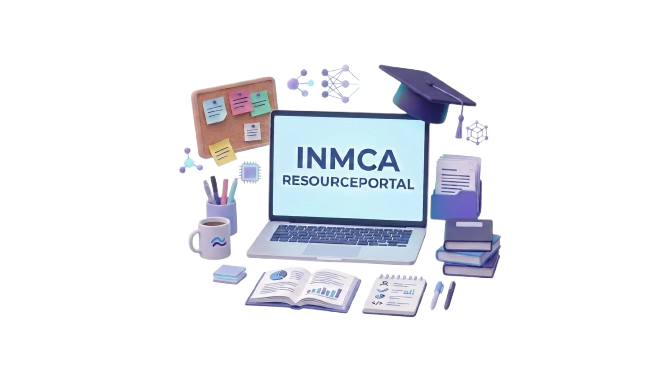

Welcome to INMCA Resource Portal
Your one-stop platform for notes, question papers, syllabus and AI-powered exam preparation.

Everything You Need for Your Studies
Access all your academic resources from one place.
Notes
Access semester-wise and subject-wise study notes.
Question Papers
Find previous year and important question papers.
Syllabus
View complete semester-wise syllabus and subjects.
AI Study Assistant
Get important questions and quick revision support.
Your Academic Journey, Made Easier.
INMCA Academic Resources Portal is a centralized platform designed for Integrated MCA students. It helps students easily access notes, question papers, syllabus and AI-powered exam preparation resources.
Explore ResourcesStart Your Exam Preparation Today
Access your academic resources and prepare smarter.
Get Started →